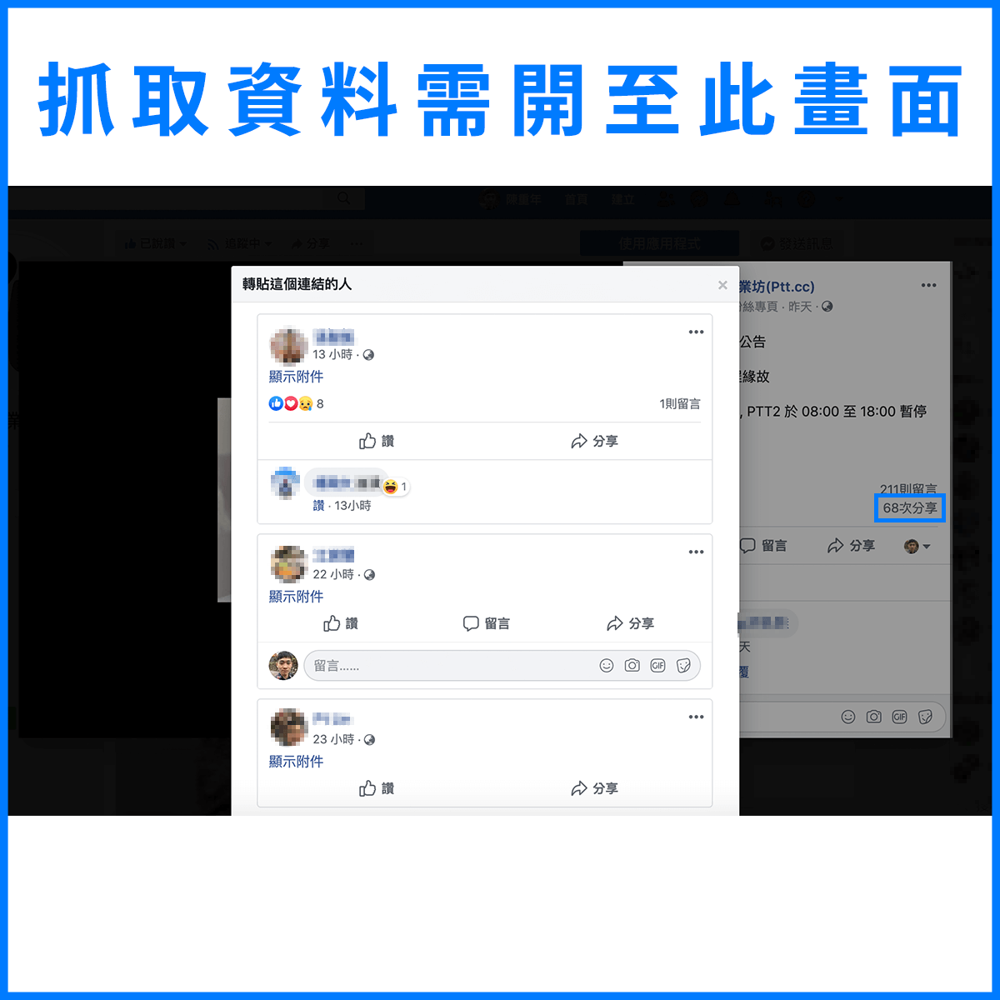

抓貼文有公開分享的用戶名稱
使用限制：不限是否有管理者權限，但僅限抓取有公開分享的用戶名稱
使用說明：
- 將以下「抓分享」按鈕拖至瀏覽器的書籤列完成插件的安裝。
- 打開想要抓取的貼文專屬頁面（不限是否為粉絲團貼文，個人貼文也允許）。
- 點擊貼文中的「Ｎ次分享」，以打開公開分享的用戶資訊頁。
- 點擊瀏覽器書籤列中已安裝完成的「抓分享」書籤。
- 請等待片刻，資料抓取中畫面將會不停捲動。
- 等待跳出新分頁後，有公開分享貼文的用戶名稱將會顯示在該頁面中。
- 分頁跳出後，原先的頁面將會重新整理，因此建議要抓取前務必點擊該貼文的時間文字，以連結至貼文專屬頁面。
抓分享
=>{var myVar=setInterval(()=>{let imgCollection=document.getElementsByTagName('IMG'); let arr=[...imgCollection].map((e)=> e.src); let moreData=arr.indexOf( 'https://static.xx.fbcdn.net/rsrc.php/v3/yw/r/_2npUSCf6mV.gif' ) !==-1; scrollBy(0, outerHeight); if (!moreData){clearInterval(myVar); let arr=document .getElementById('repost_view_dialog') .getElementsByClassName('_7tae _14f3 _14f5 _5pbw _5vra'); let arr1=[...arr]; let userDataHTML=arr1.map((e)=> '<p>' + e.innerText + '</p>'); let userDataHTMLText=userDataHTML.join(''); window.location.reload(''); open=window.open('about:blank', '_blank'); open.document.title='Get Facebook Share User Data'; open.document.head.innerHTML='<title>抓分享｜Facebook 資訊收集小工具</title><style>p{margin: 0;}</style>'; open.document.body.innerHTML=userDataHTMLText;}}, 1000);})();){kind=link}